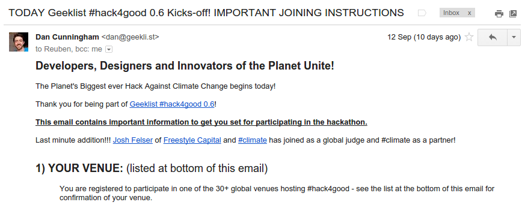
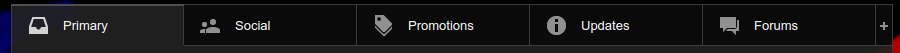
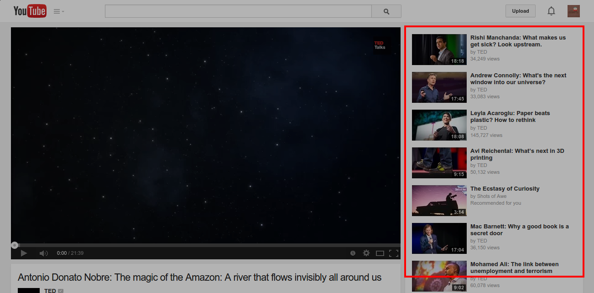
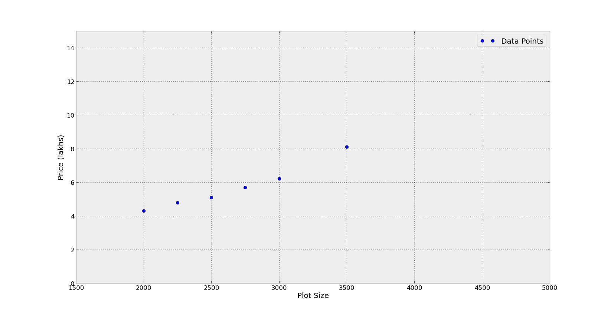
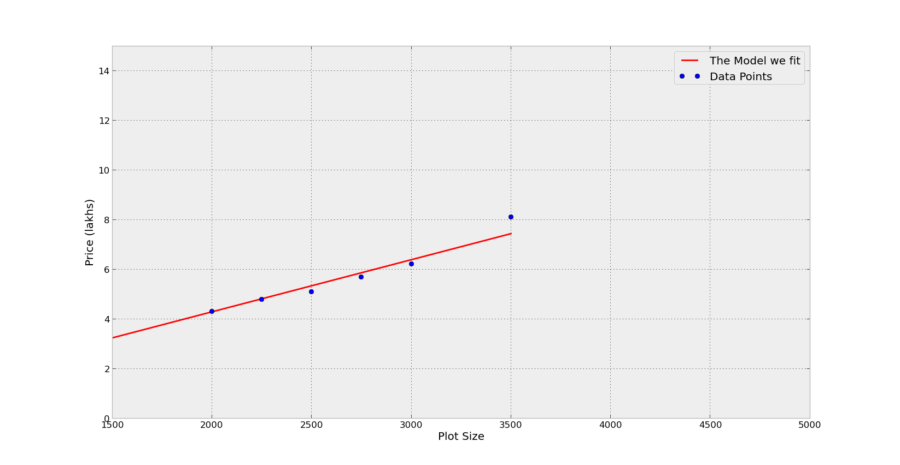
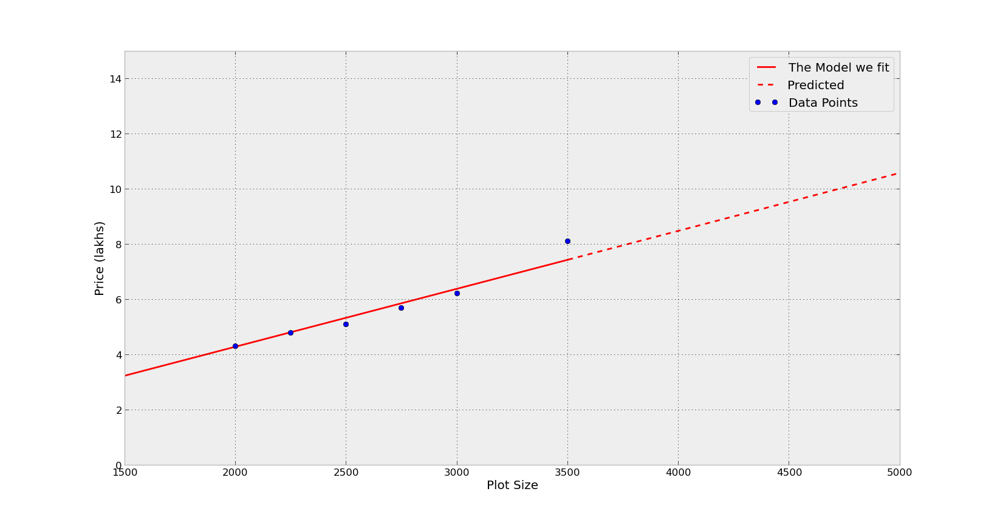
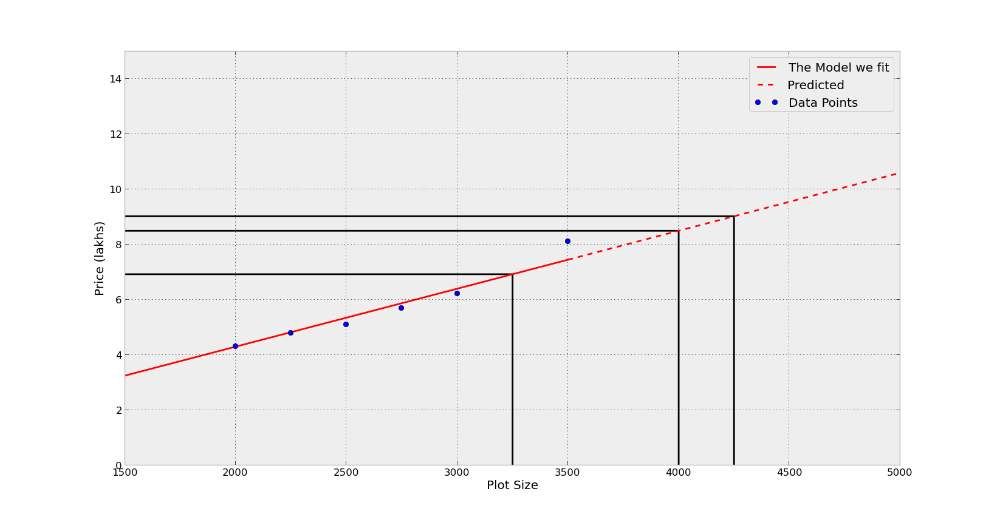

Machine Learning
an introduction
Samarth Bhargav
First - what is Machine Learning?
ML is the study of systems that can 'learn'
- By itself
- No 'explicit programming'
- Data Driven
More Formally
- Improve their performance P
- At some Task T
- With experience E
A Well Defined Learning Task : <P,T,E>
What isn't Machine Learning
- It's not ML if you give the rules
- It's not ML if there is no data
- It's not ML if there is already a formula
Data does not lie
Now that we know what ML is..
Where can it be used?
Any Ideas?
Autonomous Cars
Optical Character Recognition

LeNet-5, convolutional neural networks, Yann Lecun
Spam Detection

Email Classification
Recommendations
Cool, why do I need to learn it though?
$$
Consulting firm McKinsey estimates that India will need 2 lakh data scientists in the next few years.Talented Indian data scientists get top dollars
Types of ML
- Supervised Learning
- Unsupervised Learning
- Semi-Supervised Learning
- Reinforcement Learning
Supervised Learning
In simple terms: We know what kind of output to expect
Two Broad Categories
- Regression
- Classification
Regression
Real Valued Output
Example: Want to predict price of plotWe have some data: 
Fit a 'model' i.e a Straight Line on existing data
Use some ML Algorithm (not explained in this session)Equation: y = mx + b 
Extend the line!

Predict new values!

Run the code:
Github LinkClassification
Discrete Valued Output
'Classes'
Unsupervised Learning
- Exploratory
- Don't know what output is
- Try to find a hidden pattern
- Heavily tied to what kind of information you want
Example
Clustering
Given this dataset, find information about it:
Supervised vs Unsupervised
Example: Face Recognition
If face recognition is supervised, it means that your examples are be labeled, or we explicitly say which ones are faces and which ones aren't.
In an unsupervised algorithm the examples are not labeled, i.e. you don't say anything. Of course in such a case the algorithm itself cannot "invent" what a face is, but it could be able to cluster the data in different class, e.g. it could be able to distinguish that faces are very different from panoramas, which are very different from horses.
Global State
Set data-state="something" on a slide and "something"
will be added as a class to the document element when the slide is open. This lets you
apply broader style changes, like switching the background.
Custom Events
Additionally custom events can be triggered on a per slide basis by binding to the data-state name.
Reveal.addEventListener( 'customevent', function() {
console.log( '"customevent" has fired' );
} );
Slide Backgrounds
Set data-background="#007777" on a slide to change the full page background to the given color. All CSS color formats are supported.
Image Backgrounds
<section data-background="image.png">Repeated Image Backgrounds
<section data-background="image.png" data-background-repeat="repeat" data-background-size="100px">Background Transitions
Pass reveal.js the backgroundTransition: 'slide' config argument to make backgrounds slide rather than fade.
Background Transition Override
You can override background transitions per slide by using data-background-transition="slide".
Intergalactic Interconnections
You can link between slides internally, like this.
Fragmented Views
Hit the next arrow...
... to step through ...
any type- of view
- fragments
Fragment Styles
There's a few styles of fragments, like:
grow
shrink
roll-in
fade-out
highlight-red
highlight-green
highlight-blue
current-visible
highlight-current-blue
Spectacular image!

Export to PDF
Presentations can be exported to PDF, below is an example that's been uploaded to SlideShare.
Take a Moment
Press b or period on your keyboard to enter the 'paused' mode. This mode is helpful when you want to take distracting slides off the screen during a presentation.